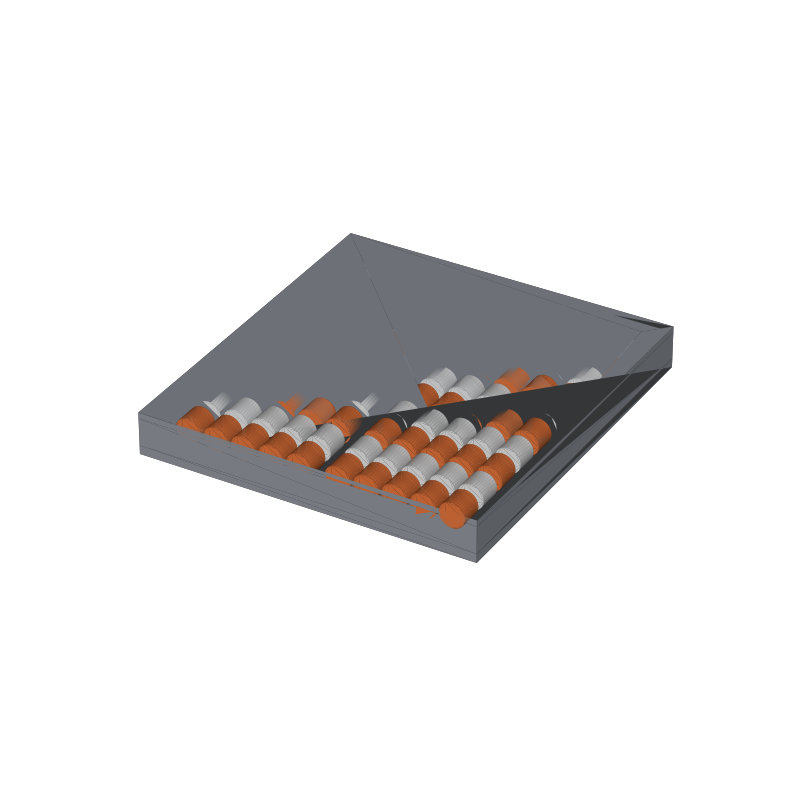

Print-in-place abacus STL, a 100-bead counting frame
Most printed abacus builds string beads on rods. The rods print horizontally and sag, or vertically and snap, and you spend an evening threading a hundred beads. This one seals them in: every row is a closed channel printed with its beads already inside, and the frame comes off the plate working. Shake it once and the beads settle into place.
The counting structure is the rekenrek one. A 2.5 mm rib splits every row into two halves of exactly 5 beads, so a half slide is 5, a full row is 10, and five rows are 50. Place-value demos read from across a desk: 47 is four full rows, a half slide of 5, and two beads over.
The frame is one closed extrusion: a 3 mm floor, perimeter walls, ten rows of internal walls, a center rib per row, and a 2 mm lid that bridges the channels. Nothing assembles, nothing strings, and no part needs supports.
This page carries the measured spec sheet: dimensions taken from the mesh, the bead-by-bead layout check, and preview renders, so you can check the sizes before you slice.

The renders color alternate rows orange and white to show the 5+5 structure. The STL is one material; the beads print in whatever color you load. Two-tone beads would need a filament swap or an AMS split, and the channel layout already supports it if you want to try.
Spec sheet, measured from the mesh
| Spec | Value |
|---|---|
| As exported | 111.5 × 119.5 × 14.15 mm, one piece with 100 loose beads inside; no assembly, no stringing |
| Beads | 100 barrel beads, Ø8.5 × 7.5 mm, 425.3 mm³ each; verified as 100 separate watertight bodies in the exported mesh |
| Channels | 20 sealed half-channels, 10 rows × 2, each 47.5 × 8.3 mm inside, split by a 2.5 mm center rib per row |
| Bead clearances | Measured from the mesh: 0.3 mm above the chamber floor, 0.35 mm under the lid, 0.4 mm per side, 0.9 mm of slack at each channel end; bead-to-frame intersection volume 0 mm³ |
| Counting structure | 5 beads per half-row: half a slide is 5, a full row is 10, five rows are 50; bead pitch 9.3 mm, row pitch 10.8 mm |
| Frame | Floor 3.0 mm, internal walls 2.5 mm, perimeter 3.0 mm under a 4.0 mm decorative rim, lid 2.0 mm; 6 mm corner rounding |
| Lid bridge | The lid bridges the 8.3 mm channel gaps in one pass; every layer over a channel is a flat bridge, so no supports anywhere |
| Volume | 158.9 cm³ solid total (frame 116.4, beads 42.5), about 195 g of PLA at typical infill |
| Print time | About 6-8 hours, PLA, 0.4 nozzle, 0.2 mm layers; a geometry estimate, not a measured print |
| Mesh check | Watertight, winding consistent, 38,342 faces, euler 242, 101 bodies (frame + 100 beads); the 3MF carries 101 named objects (trimesh 5.1.0, 2026-09-10) |
| Files | STL (1.9 MB) and 3MF (181 KB) plus the parametric generator script |
| License | CC-BY 4.0 on the MakerWorld upload; royalty free, no AI training, direct from us |
How beads print loose inside a sealed frame
Each bead is a closed barrel that never touches the frame. The chamber floor sits at 3.0 mm, the bead rides 0.3 mm above it; the lid underside sits at 12.15 mm, the bead tops out 0.35 mm below it; the channel is 8.3 mm wide against a 7.5 mm bead. During the print the gaps are small enough that no droop reaches the bead, and after it the bead breaks free with a flick.
The lid prints over the channels as a bridge. At 8.3 mm wide, the gap is comfortably inside what a 0.4 nozzle bridges flat, and the internal walls anchor both ends of every span. The one thing that would ruin the mechanism is a squished first layer eating the 0.3 mm floor gap, so print the frame on a clean, well-leveled plate.
The bead check ran on the exported STL itself: all 100 beads came back as separate watertight bodies at the same 425.3 mm³, ten rows at 10.8 mm pitch, five beads per half-channel at 9.3 mm pitch, and zero intersection volume with the frame.
Print notes
Print it flat on the plate as one piece. No supports, no brim beyond what your plate adhesion needs, and no assembly step: the beads are already in their channels when the print ends. Expect the first few slides to feel gritty until the channel floors wear in.
I have not test-printed this one yet. If you print it, post a make and tell me whether the beads broke free clean; that is the whole gamble in this design. The three clearances are the tuning knobs: CLR_BOT (0.3 mm) is the one that fights a rough first layer, CLR_TOP (0.35 mm) and CLR_SIDE (0.4 mm) set how freely the beads slide.
The generator (gen_abacus18.py) takes rows, beads per row, bead size, the three clearances, and wall and floor thickness as parameters. More rows or bigger beads change the footprint and the lid span, so recheck the bridge width if you push the channel past about 10 mm.
Honest limits
The 6-8 hour figure is a geometry estimate from the mesh, not a timed print. The bead break-free is the untested part: 0.3 mm of floor gap is enough in theory, but a first layer laid down 0.2 mm thick eats most of it, and a bead fused to the floor means a broken frame. If the first print fuses, the fix is CLR_BOT at 0.4 and a fresh plate.
Beads slide along their row and stop at the rib; they do not click or hold position, so the frame shows a quantity but not a stored one. That is the rekenrek trade: free sliders for counting fluency, no detents for transport.
Where to get the files
The abacus is staged on our MakerWorld account and goes public on our profile once it is submitted and clears review.
More printed organizers and tools, with a status table for the pool: 3D printed desk organizers and printable tools. The classroom side, including this abacus and a 0-99 number line, is in 3D printable education models.
FAQ
How do the beads come off the plate already working?
They print inside sealed channels with 0.3 mm of air under them, 0.35 mm above and 0.4 mm at the sides, never touching the frame. The gaps are too small for infill or droop to fill during the print and large enough that the bead pops free afterward. All three gaps came straight off the mesh, verified against the generator parameters.
Why 5+5 instead of ten beads in a row?
Five is what the eye reads without counting, so a half slide reads as 5 and a full row as 10 instantly. It is the structure rekenreks use, and it makes place value physical: 47 is four full rows, one half slide and two beads, with no counting past five.
Can I print it bigger, or with more rows?
The generator takes rows, beads per row, bead diameter and length, all three clearances, and the wall and floor thickness. Watch two things as you scale: the lid bridge widens with the channel, and a bigger bead needs the clearances scaled with it. The 10 mm bridge limit keeps the lid printable flat on most machines.